2018 Apr.
四月是真是上帝给我们开的一个恶作剧，让你我以独特的方式相见，我们的故事就此开始 ...
2018 Apr. 9
相处了一段时间，发现两个人都是真的很走心的在对待这份感情...
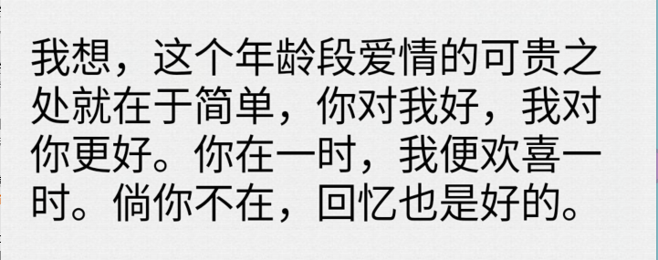
2018 Apr. 11
每天都很期待着你的突然出现,特别是在我很想你的时候...
2018 Apr. 19
第一次陪小朋友去看电影，emmmmm，虽然看的是斯皮尔伯格的《头号玩家》，但你依旧愿意陪我...
2018 Apr. 22
期待已久的运动会终于到了，不过你要去当观众...那么晒，还不让打伞╰(‵□′)╯。我能让你受委屈嘛！哼，直接领走...(当然是没有扣分的领走咯~~~)
2018 Aug. 25
泼墨三千烟火, 许你一世迷离
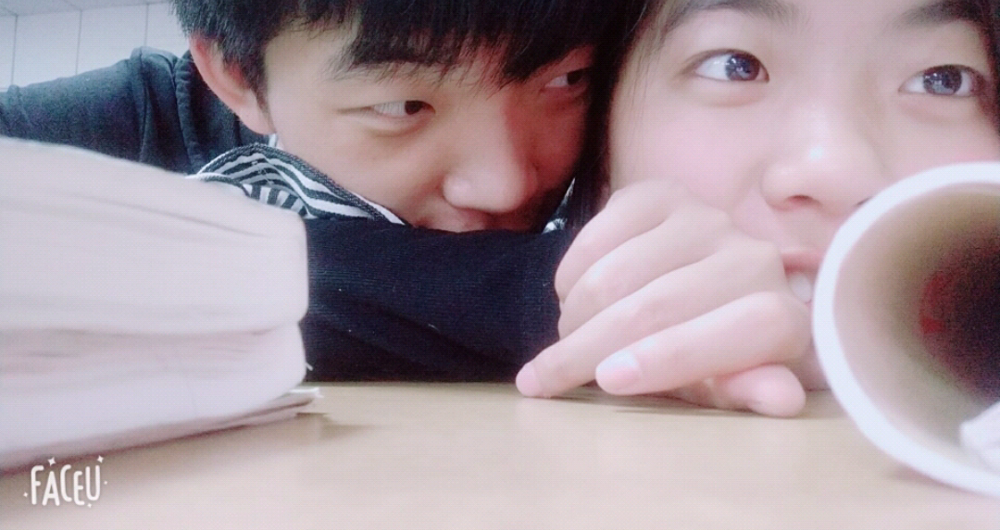
2018 May 6
只要有你，每天都是晴空万里呀...
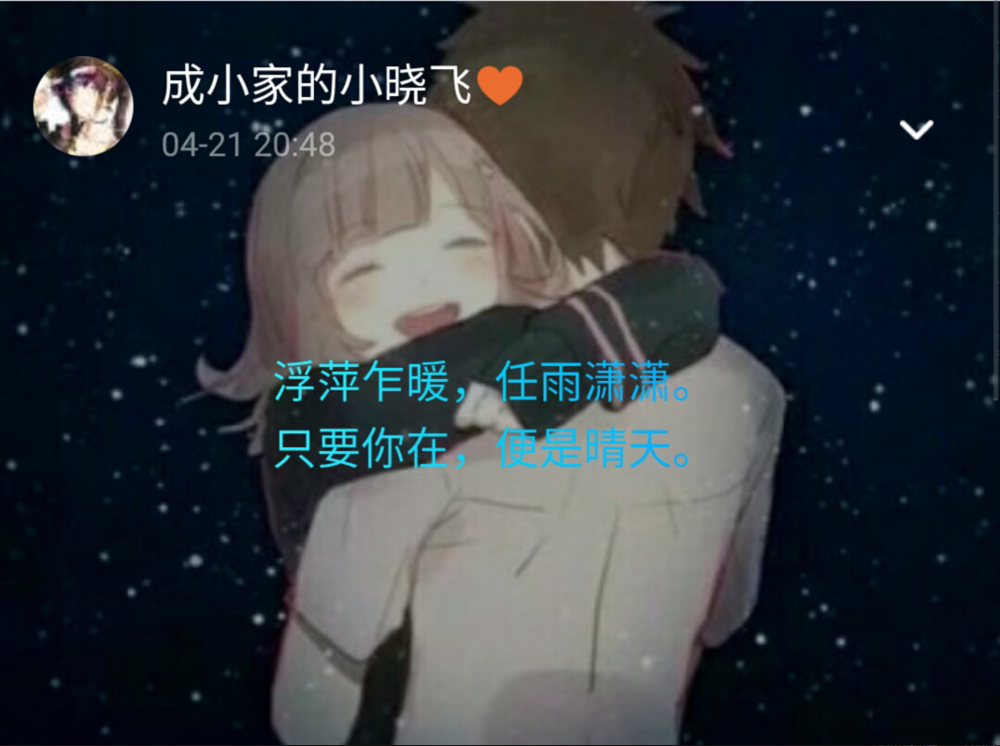
2018 May 11
纸短情长，吻你万千
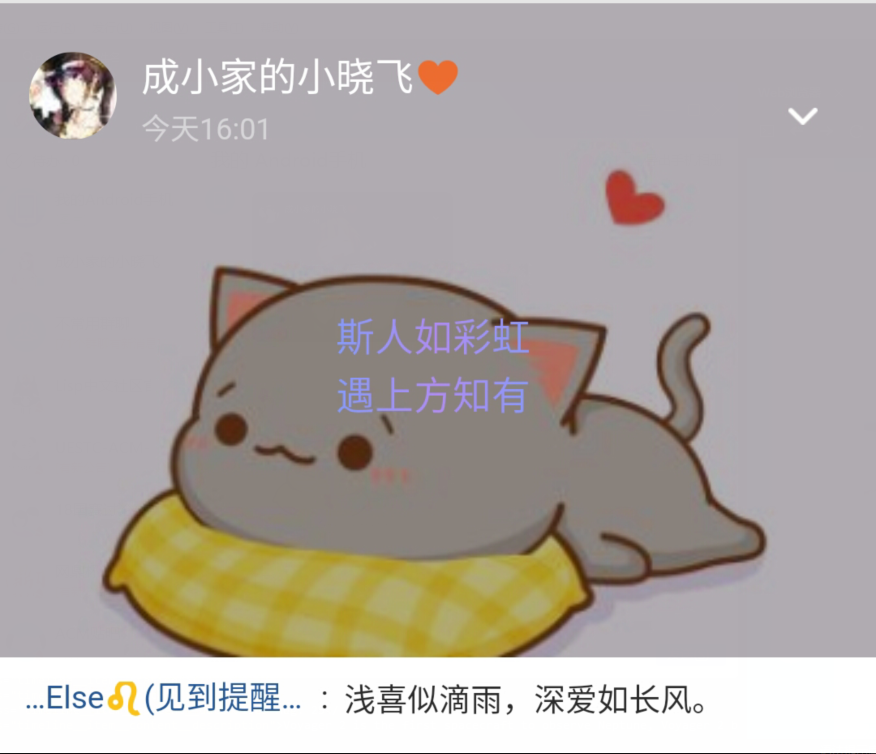
2018 May 20
终于敢公开向你表白了，隐匿了很久，终于可以大声的宣布：晓飞，真的认真喜欢你！
深深的话只对你说，长长的路只陪你走......
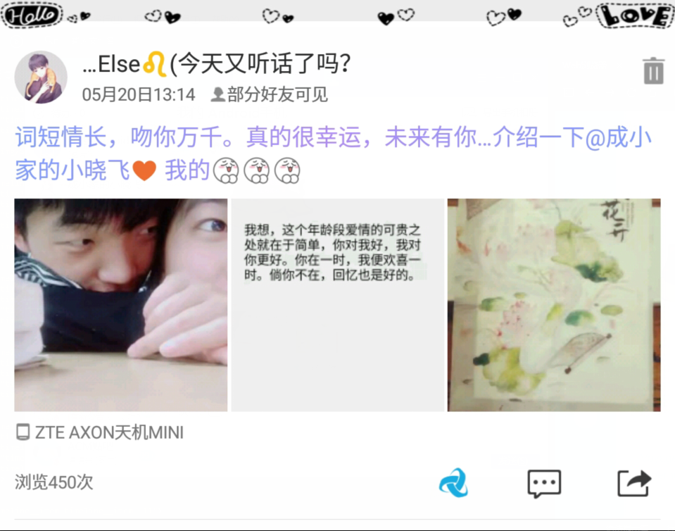

2018 May 22
你写给我的信，值得我一生珍藏...
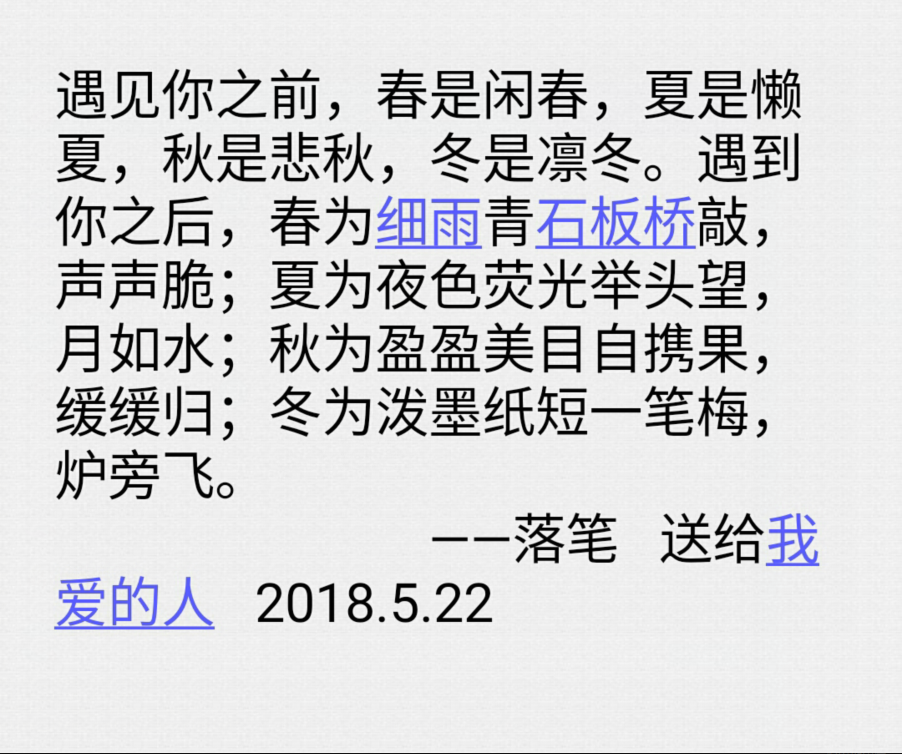
2018 May 25
唉，惹小朋友生气了...哄了好久，还好看在我主动认错的份上，500字检讨...
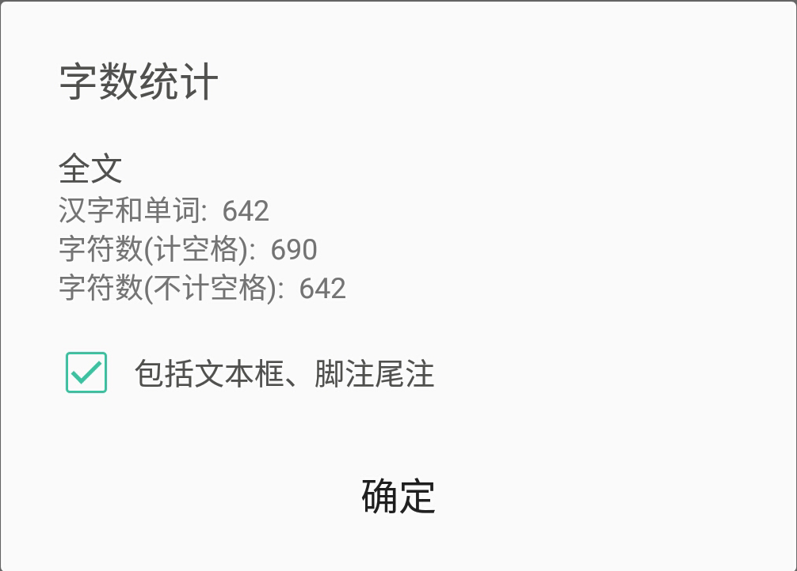
2018 May 27
终于还是得承认，自己发烧了...38.5°C...尽管在你面前勉强能撑住，不想让你担心。本以为睡一晚就会过去，但此后两天的高烧持续，还是把我烧到了医院...你知道后中午又牺牲午休时间来陪我...
2018 May 29
; Me -- 扑过来吧（￣︶￣）↗
小朋友 -- o(*////▽////*)q
Me -- 抱住了，不松开了~~~
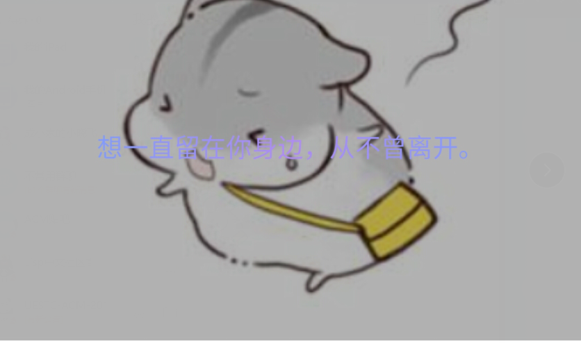
2018 Jun 4
小朋友要开始值周了...值一个星期，七天，大妈盯得紧，只能去陪5天了...^o^y
2018 Jun 9
数模校赛开始了...三天两夜，一直都是沉浸在头脑风暴中，真的无暇陪你，也好在你比较乖巧。赛后，第一件事就是去找你，又是腻了一下午...~o(*￣▽￣*)ブ
2018 Jun 21
哈！背着我偷偷给我买了一大堆的小零食，还有一个足球！！！此生两大爱好同时被满足！！！♪(^∇^*)
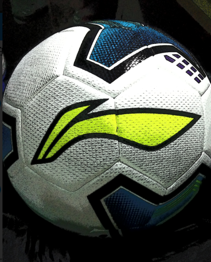 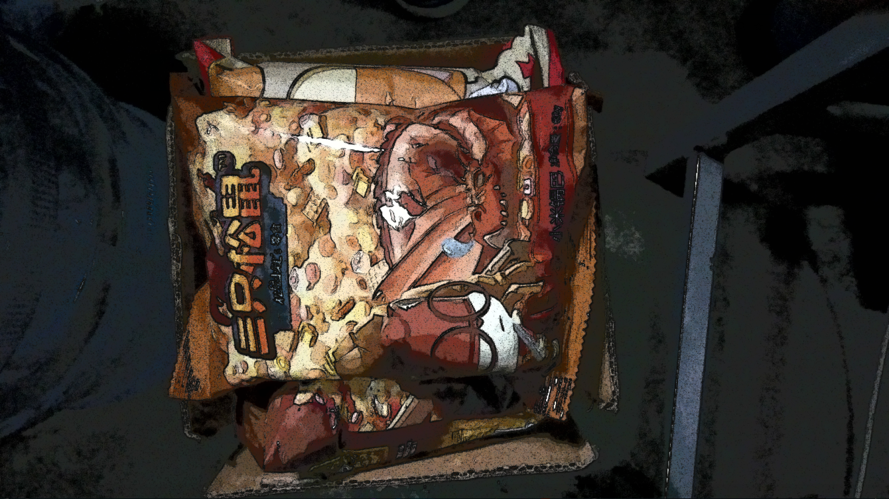
2018 July 10
在一起100天啦！！！感觉时间真的是过的好快呀~~~
2018 Jun 13
假期到了，很无奈，要分开了...回家的路上，手一直牵着，我怕一松开可能就要好久才能牵到了。到了家乡的火车站，伫立相拥，许久许久......
2018 Jun 28
My brithday!!!小朋友也是很辛苦熬夜到了凌晨来给我发来祝福
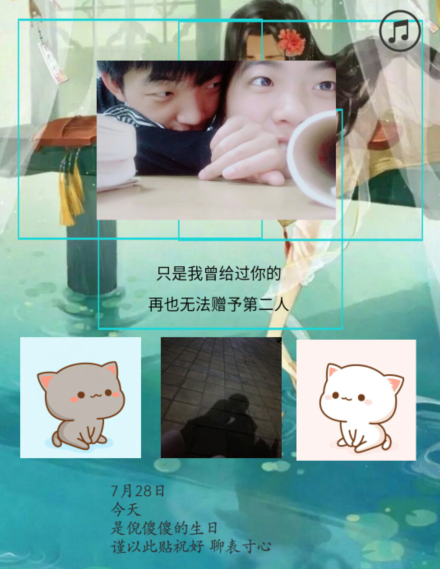
2018 August 16
小朋友的科目二顺利考过了！！！Nice，依然优秀...
2018 August 17
我们的故事未完待续···
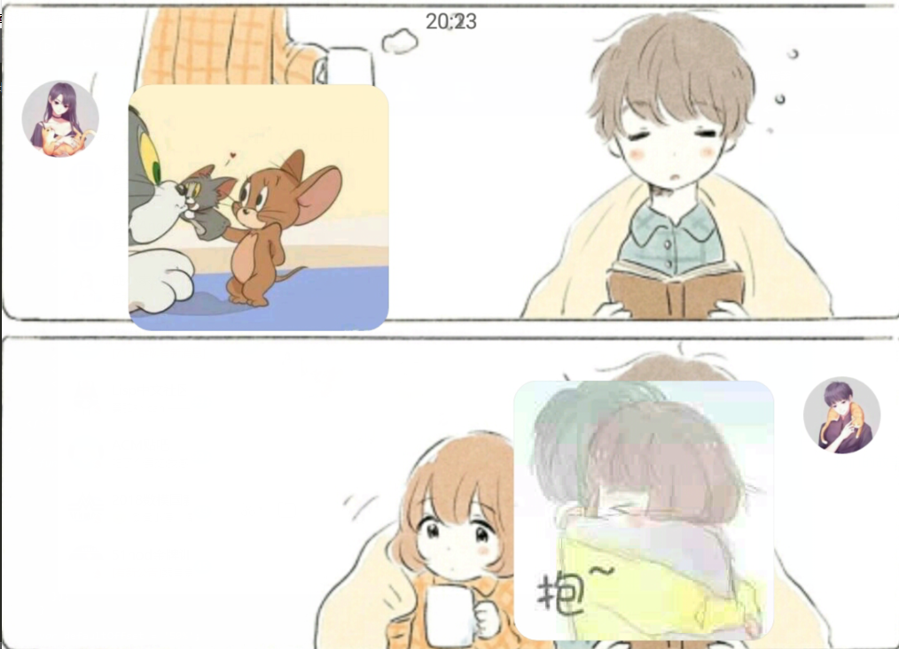